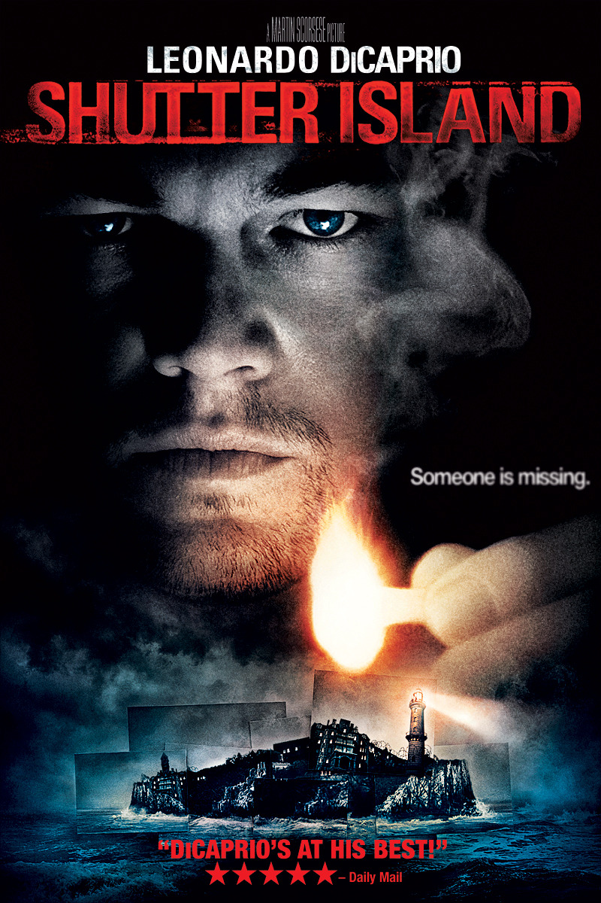

In 1954, U.S. Marshal Edward "Teddy" Daniels and his new partner Chuck Aule travel to Ashecliffe Hospital for the criminally insane on Shutter Island, Boston Harbor. They are investigating the disappearance of patient Rachel Solando, incarcerated for drowning her three children. Their only clue is a cryptic note found hidden in Solando's room: "The law of 4; who is 67?" The two men arrive just before a massive storm, preventing their return to the mainland for a few days.
Teddy and Chuck find the staff confrontational and uncooperative. Lead psychiatrist John Cawley refuses to turn over records, and they learn that Solando's doctor Lester Sheehan left the island on vacation immediately after Solando disappeared, preventing them from interrogating him. They are told that Ward C, one of three, is reserved for the most severely disturbed patients and is off limits, along with the lighthouse, which has already been searched. While being interviewed, one patient writes the word "RUN" in Teddy's notepad. Teddy starts to have migraine headaches from the hospital's atmosphere and has waking visions of his experiences as a U.S. Army soldier during the liberation of Dachau including reprisals against the guards. He also has disturbing dreams of his wife, Dolores Chanal, who was killed in a fire set by arsonist Andrew Laeddis. In one instance, she tells Teddy that Solando is still on the island—as is Laeddis, who everyone has no knowledge of. Teddy later explains to Chuck that locating Laeddis was an ulterior motive for taking the case.